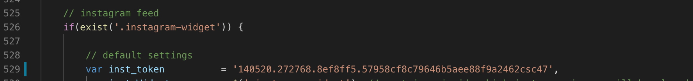
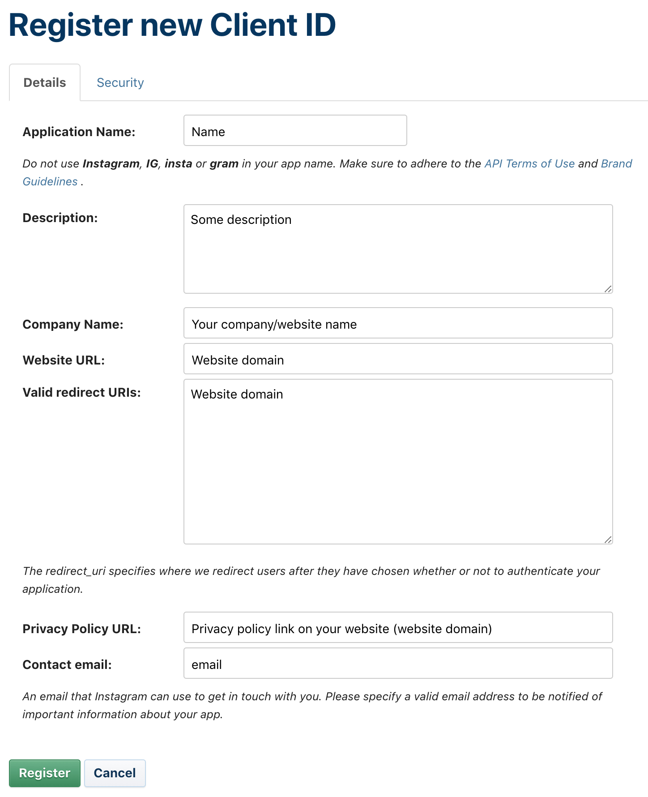
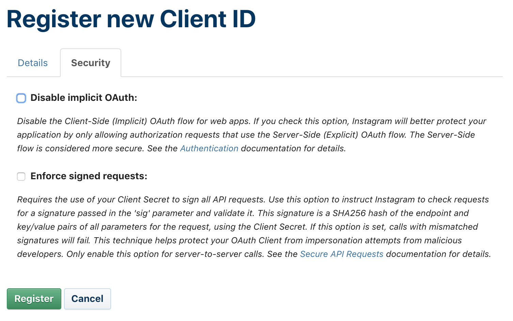
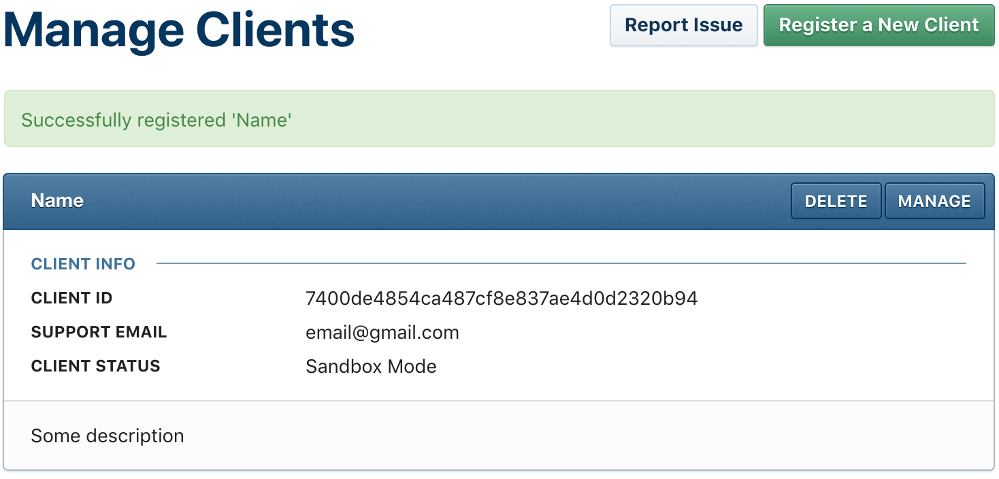
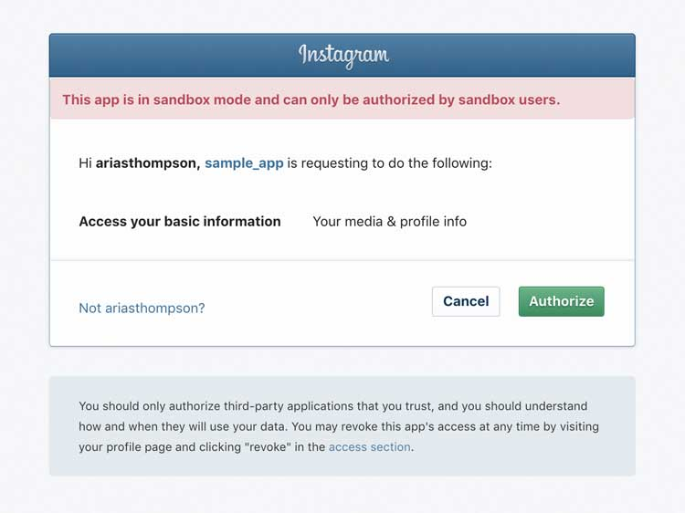
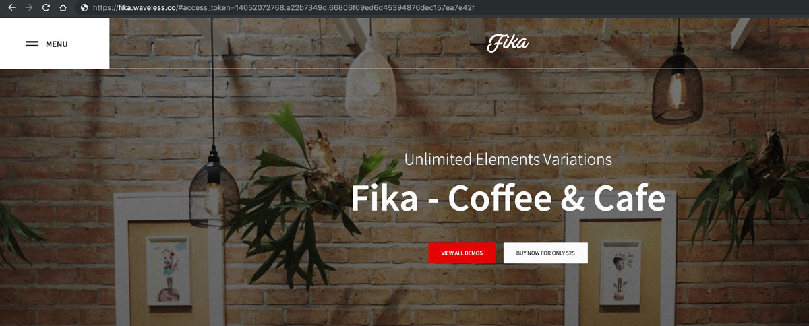

Social feed
Fika OnlyTTo connect your Instagram account to the website, you need to replace sample Instagram Access Token with yours. You can do that in the app.js file (check the screenshot below).
To get your Access Token, you need to go through a few simple steps:
-
Register as an app developer with Instagram.
Follow this link: https://instagram.com/developer/clients/manage and click “Register a New Client”. Fill up the form. Important! Click on the security tab and untick the option to Disable OAuth.If you are registering your first app, after the previous step you will be asked to fill up the "Developer Signup" form. Enter your website's domain, phone, project description and click "Sign up" button.
After the registration, you will see the following box. You need to copy the Client ID from it.
 -
Generate an access code
To generate your access token you need to go through the process of authenticating to your own application (that you have registered in the previous step) and therefore grant access to your media. To do this, you need the Client ID from the previous step.
Once you have your client ID, in a text editor, copy in the following text:
https://api.instagram.com/oauth/authorize/?client_id=CLIENT-ID&redirect_uri=REDIRECT-URI&response_type=tokenNow, replace CLIENT-ID with your Client ID and the REDIRECT_URI with your redirect uri.
Copy and paste the url into a browser and hit enter. This will take you to an authentication window. This should look something like the following image.
Once you authorize your app/client, you will be redirected to your redirect url as in the image below. At the end of your url you will see your generated access token. Copy and paste the whole url into a text editor.
Your Access Token is what allows your website to authenticate to Instagram and access your own media. This will not allow you to access anyone else’s media, and you are limited to your last 20 images. This is because you are in Sandbox mode using the basic set of permissions.
-
Paste the access code in app.js file
Configure your instagram feed
To start using instagram feed add .instagram-widget class to the element that should hold your images.
There are few settings that you can control be attaching HTML attributes to the feed container:
data-inst-link- defines what should happen if a user clicks on a image. Available options:'instagram'- open image on Instagram'fancybox'- open popup galery'no-link'- nothing should happen after a click
data-inst-num- defines the number of images to display (max - 20). Default value - 6.data-inst-size- defines the size of the images. Available options:'thumbnail'- width - 150px'small'- width - 320px'standard'- width - 640px
data-inst-wrapper- defines the HTML tag that will be used as a wrapper to each image. Default value -<div></div>.